Desiderio Incontrollabile
com.basic.ToxicGrab · Versione 1 · Approvata, versione 1.

A 60 px
Mano alla bocca e volto leggibili; il piccolo avanzo di cibo non si distingue.
Giudizio del 26 novembre 2026: lotto chiuso: undici carte approvate (D212). Per L’Ultimo Tiro la proposta corrente è la versione 3, con rimozione dell’avambraccio indicato dal proprietario. Registro e prompt di correzione · Prompt iniziali invariati. I campi non salvano automaticamente il testo.
com.basic.ToxicGrab · Versione 1 · Approvata, versione 1.
A 60 px
Mano alla bocca e volto leggibili; il piccolo avanzo di cibo non si distingue.
junkie.character.PatheticBlade · Versione 1 · Approvata, versione 1.
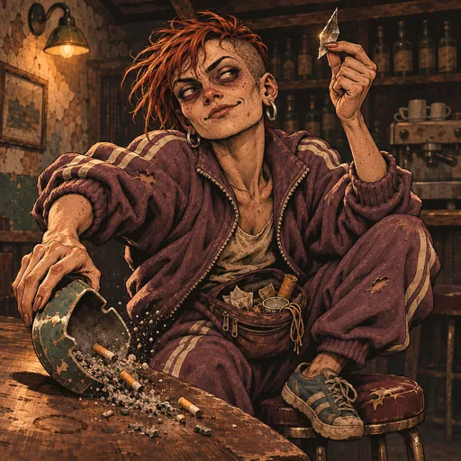
A 60 px
Posacenere rovesciato e mano alzata visibili; la scheggia è troppo piccola per identificarla.
base.tossico.bound.RaschiareIlFondo · Versione 2 · Approvata, versione 2.
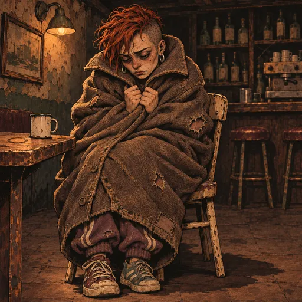
A 60 px
Cappotto chiuso, testa bassa e postura raccolta leggibili; espressione triste poco dettagliata.
Nessun nuovo arto aggiuntivo osservato; il cappotto avvolge il corpo e lo sguardo è abbassato.
Versione 1

junkie.character.RottenSmile · Versione 2 · Approvata, versione 2.
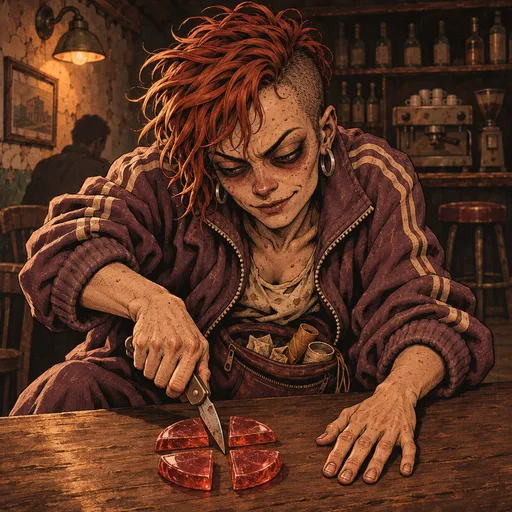
A 60 px
Quattro pezzi rossi separati visibili; lama minuta.
Caramella in quattro spicchi separati; non compare più un disco intero.
Versione 1

junkie.LethalHeroinDose · Versione 3 · Approvata, versione 3.
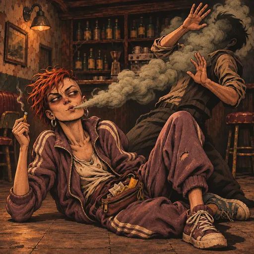
A 60 px
Nube e avversario leggibili; l’avambraccio a terra non compare più.
Rimosso l’avambraccio orizzontale con la mano; il pavimento occupa l’area indicata. L’altro braccio non è esposto nella posa.
Versione 1
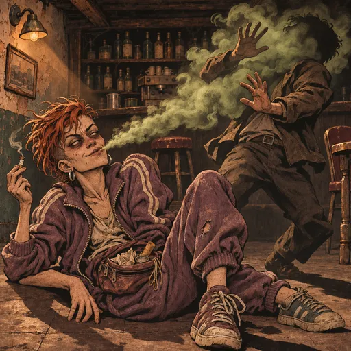
Versione 2: biforcazione del gomito ancora presente.
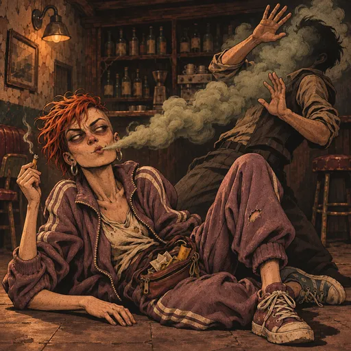
junkie.MethDrivenRage · Versione 3 · Approvata.
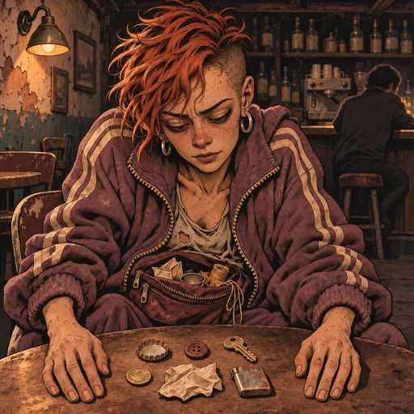
A 60 px
Sguardo abbassato e postura raccolta leggibili; allineamento degli occhi non valutabile nel dettaglio.
Sei oggetti appoggiati sul tavolino; nessun oggetto in volo.
Versione 1

Versione 2 da correggere secondo il secondo giudizio.
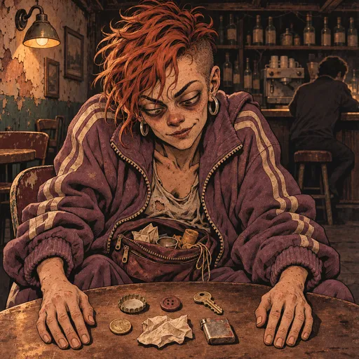
junkie.Cough · Versione 1 · Approvata, versione 1.
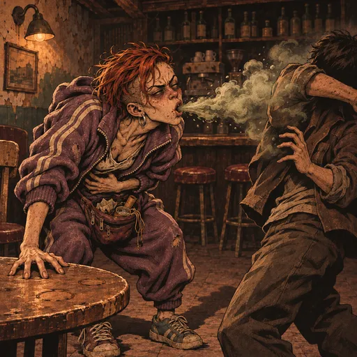
A 60 px
Getto dalla bocca e avversario che si ritrae leggibili; mani minute e poco distinte.
junkie.PervertedMetabolism · Versione 3 · Approvata.
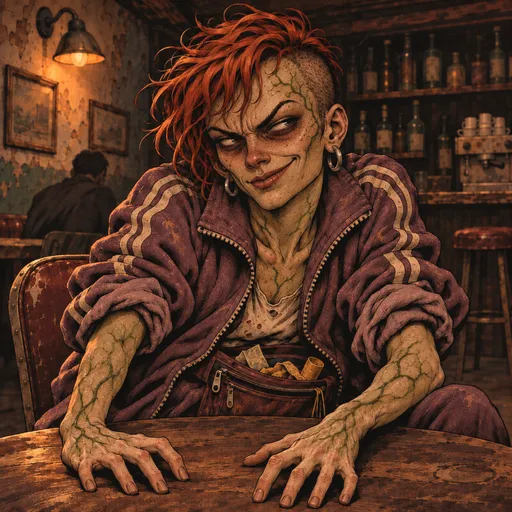
A 60 px
Ghigno e sopracciglia marcate distinguibili; vene verdi poco leggibili.
Vene verdi presenti a piena risoluzione su mani, avambracci, collo e tempia; leggibilità limitata a 60 px.
Versione 1
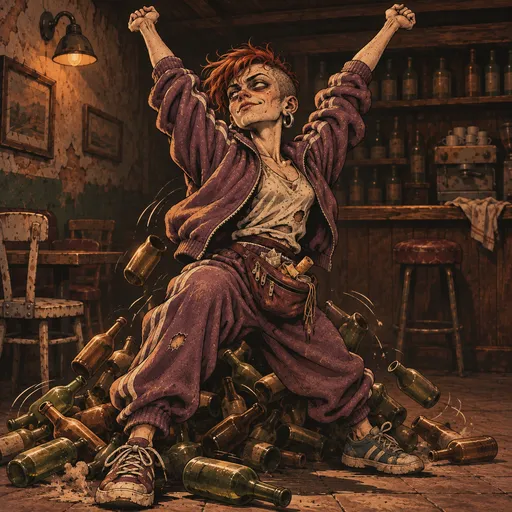
Versione 2 da correggere secondo il secondo giudizio.
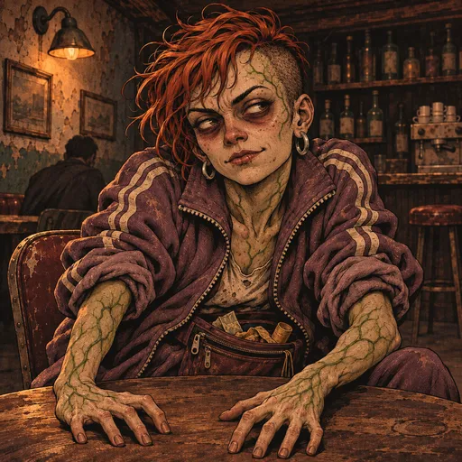
junkie.AmphetamineReflexes · Versione 1 · Approvata, versione 1.
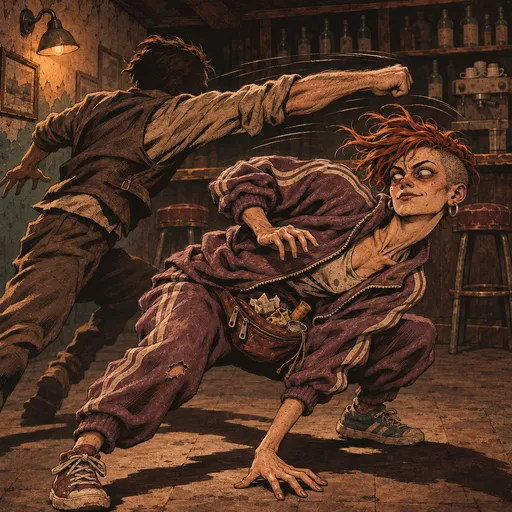
A 60 px
Pugno alto e abbassamento di Celestina leggibili; dettagli del volto poco distinti.
junkie.ToxicBloodDrain · Versione 3 · Approvata.
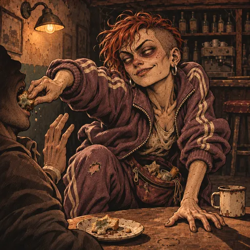
A 60 px
Mano verso la bocca e reazione dell’avventore leggibili; muffa non identificabile nel dettaglio.
Pelle verdastra presente; ombre ordinarie a terra, senza figura soprannaturale.
Versione 1

Versione 2 da correggere secondo il secondo giudizio.
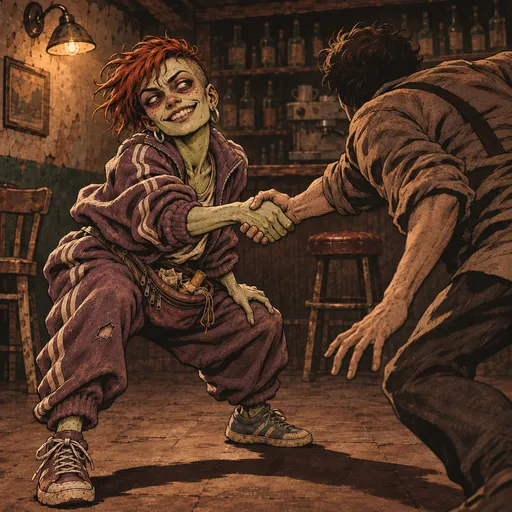
base.tossico.UnAssaggino · Versione 1 · Approvata, versione 1.
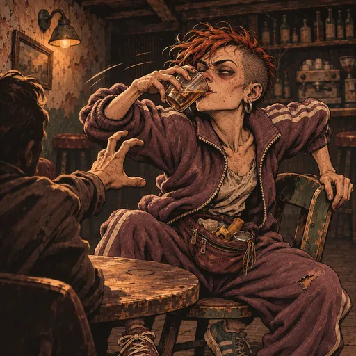
A 60 px
Bicchiere alla bocca e mano del cliente protesa leggibili; annusare non è distinguibile.